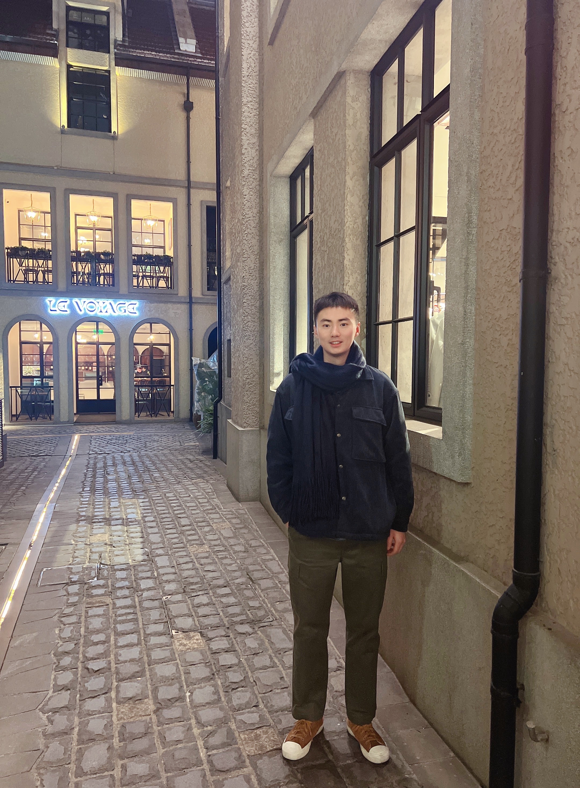

PhD student
ACA Lab, SEIEE
Shanghai Jiao Tong University
Email: liufangxin@sjtu.edu.cn
Wechat: lfx920701
Office: SEIEE 3-125, SJTU
800 DongChuan Road, SEIEE Building #03-125, Minhang District, Shanghai
I obtained my master degree in computer science and technology from PLA Science and Technology University in Nanjing, Jiangsu Province in June 2017. I worked in National Internet Emergency Center (CNCERT/CC) Shanghai Branch from July 2017 to July 2019. Currently, I am chasing my PhD degree of CS. in Shanghai Jiao Tong University Advanced Computer Architecture laboratory (ACA Lab), supervised by Prof. Li Jiang.
The main direction of my current research is in-memory computing, neuromorphic computing and architecture design. Specifically, I am devoted to studying DNN/SNN/GNN training/inference acceleration, and nonvolatile memory. The papers I read and related resources will be shared on my Github in the near future.
Current research interests focuses on:
- In-memory Computing (存内计算)
- Brian-inspired Neuromorphic Computing (神经模态计算)
- Neural Network Acceleration
Our paper "SME: ReRAM-based Sparse-Multiplication-Engine to Squeeze-Out Bit Sparsity of Neural Network" has been accepted by ICCD'21 !
Aug./20/2021
Our paper "Improving Neural Network Efficiency via Post-training Quantization with Adaptive Floating-Point" has been accepted by ICCV'21 !
Jul./23/2021
Our paper "Bit-Transformer: Transforming Bit-level Sparsity into Higher Preformance in ReRAM-based Accelerator" has been accepted by ICCAD'21 !
Jul./13/2021
Our paper "IM3A: Boosting Deep Neural Network Efficiency via In-Memory Addressing-Assisted Acceleration" has been accepted by GLSVLSI'21 !
Apr./12/2021
Our paper "PIMGCN: A ReRAM-based PIM Design for Graph Convolutional Network Acceleration" has been accepted by DAC'21 !
Feb./20/2021

Thanks to Vasilios Mavroudis for the template!